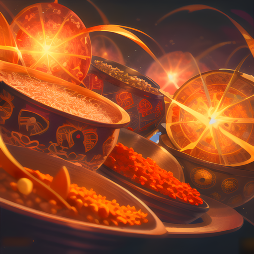
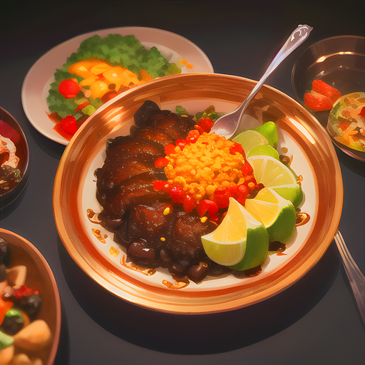
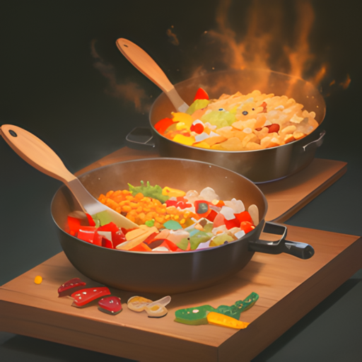
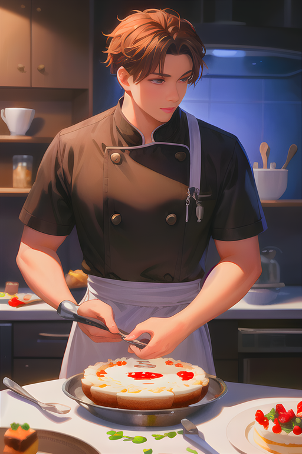

Dans l'univers d'Eternia, les Cuisiniers sont des professionnels de l'art culinaire, maîtres dans l'art de préparer des plats délicieux et nourrissants. Ils sont très respectés dans la société et sont souvent appelés à servir les nobles et les rois dans les palais les plus prestigieux. Les Cuisiniers d'Eternia utilisent une grande variété d'ingrédients pour créer des plats savoureux qui satisfont tous les goûts. Ils sont experts dans la préparation des viandes, des légumes, des céréales et des fruits de mer, et connaissent toutes les techniques culinaires pour préparer des plats raffinés. Les Cuisiniers d'Eternia sont également très créatifs et innovants, et sont constamment à la recherche de nouvelles recettes pour satisfaire les palais les plus exigeants. Ils ont un sens aigu de l'esthétique et savent présenter leurs plats de manière élégante et attractive. Les Cuisiniers sont également très conscients de l'importance de la nutrition, et savent comment équilibrer les aliments pour fournir une alimentation saine et équilibrée. En tant que tels, ils sont souvent appelés à conseiller les gens sur leur alimentation et leur santé. Les Cuisiniers sont des artisans qui apportent une touche de magie à la vie quotidienne, et sont très appréciés pour leur art culinaire raffiné.
Spécificité de la classe : 50 PV supplémentaires
Lorsqu'un cuisinier utilise la technique du coup de couteau, il doit être très confiant et déterminé, car cette attaque peut être considérée comme une arme ultime dans les combats rapprochés. Les cuisiniers qui maîtrisent cette technique sont souvent craints par leurs ennemis, car ils ont la capacité de transformer un simple couteau de cuisine en une arme mortelle redoutable.
Cette attaque est basée sur la force physique, la précision et la rapidité. Les cuisiniers doivent être en mesure de se rapprocher rapidement de leur adversaire sans se faire blesser, tout en visant des zones vulnérables du corps telles que le cœur, les poumons ou les organes vitaux. La force et la dextérité de leurs mains sont primordiales pour enfoncer le couteau dans la chair de l'adversaire, causant des dégâts considérables.
Les cuisiniers sont souvent entraînés pour développer leur force, leur agilité et leur vitesse, ainsi que pour améliorer leur maîtrise du couteau. Ils apprennent à utiliser des techniques de combat rapproché, à prévoir les mouvements de leur adversaire, et à anticiper leurs attaques pour pouvoir agir rapidement et efficacement.
Puissance : 50 | Recharge : 2 tours

La technique de l'Assaisonnement est une attaque caractéristique des cuisiniers, qui peuvent utiliser leur expertise en matière d'épices et de condiments pour affaiblir leurs ennemis tout en leur infligeant des dégâts.
Lorsqu'un cuisinier utilise cette attaque, il prend une poignée d'épices et de condiments, puis les saupoudre sur ses ennemis. Les épices irritent les yeux, la bouche et les narines de l'ennemi, le forçant à se concentrer sur les sensations désagréables plutôt que sur le combat. Pendant ce temps, les condiments s'infiltrent dans la peau de l'ennemi, affaiblissant sa défense et le rendant plus vulnérable aux attaques.
L'effet de l'Assaisonnement est cumulatif, de sorte que chaque nouvelle utilisation de l'attaque affaiblit davantage l'ennemi. Cependant, l'effet de l'attaque ne dure que trois tours, après quoi l'ennemi retrouve sa défense normale. Le cuisinier doit donc être stratégique dans l'utilisation de cette attaque, en veillant à l'utiliser au moment le plus opportun pour maximiser ses effets.
Puissance : 20 | Recharge : 3 tours | Effets : 20 dégâts (2 tours), -25% défense ennemie (2 tours)

La technique du Plat du jour est une attaque très spéciale réservée aux cuisiniers. En effet, elle permet à ces derniers de se soigner tout en obtenant un bonus de force et de défense.
Lorsqu'un cuisinier utilise cette attaque, il prépare un plat spécial qui lui permet de récupérer des points de vie. Le plat est également conçu pour augmenter sa force et sa défense, ce qui le rend plus puissant et plus résistant aux attaques de ses ennemis.
Le Plat du jour a un effet durable sur le cuisinier, car le bonus de force et de défense dure trois tours. Pendant ce temps, le cuisinier peut utiliser cette force supplémentaire pour infliger plus de dégâts à ses ennemis, tout en se protégeant des attaques ennemies.
L'effet de guérison de l'attaque est également très utile, car il permet au cuisinier de récupérer des points de vie sans avoir à utiliser d'autres objets de guérison. Cependant, l'attaque ne peut être réutilisée qu'après un délai de trois tours, ce qui oblige le cuisinier à être stratégique dans l'utilisation de cette attaque pour maximiser ses effets.
Effets : soin de 50 PV, +25% force et défense (3 tours) | Recharge : 3 tours

La technique de Cuisson parfaite est une attaque unique et efficace qui n'est utilisée que par les cuisiniers. Cette technique leur permet de surveiller de près la cuisson de leur plat tout en étant prêt à esquiver la prochaine attaque ennemie.
Lorsqu'un cuisinier utilise cette attaque, il se concentre sur la cuisson de son plat et s'assure qu'elle est parfaite. En même temps, il se prépare à esquiver la prochaine attaque de son ennemi avec agilité, en utilisant sa grande précision pour déterminer le moment opportun pour esquiver.
Cette technique est très utile car elle augmente considérablement la précision du cuisinier, ce qui lui permet d'être plus efficace dans ses attaques. De plus, l'esquive de la prochaine attaque ennemie est très utile pour éviter les dégâts et pour que le cuisinier puisse continuer à combattre sans subir de blessures.
Effets : +50% précision (2 tours), esquive de la prochaine attaque | Recharge : 4 tours

Le Dessert surprise est une technique d'attaque dévastatrice, qui ne peut être maîtrisée que par les cuisiniers les plus expérimentés. Lorsqu'ils se sentent menacés, ces maîtres culinaires utilisent cette technique pour renverser le cours des batailles les plus incroyables.
Pour préparer cette attaque légendaire, le cuisinier se retire dans sa cuisine secrète et commence à rassembler les ingrédients les plus rares et les plus précieux qu'il possède. Il y ajoute également une dose de sa propre magie, en mélangeant les ingrédients avec soin et en prononçant une incantation secrète.
Une fois la préparation terminée, le cuisinier sort de sa cuisine secrète, tenant fièrement un dessert parfaitement élaboré. Mais ce dessert n'est pas destiné à être savouré. Le cuisinier le jette vers ses ennemis, et ceux-ci ne peuvent résister à la tentation de le goûter.
Mais ce dessert n'est pas comme les autres, car il contient des ingrédients soporifiques, qui endorment instantanément les ennemis qui le consomment. En plus de cela, l'effet du Dessert surprise ralentit les mouvements de l'ennemi, réduisant leur vitesse de déplacement et les rendant plus vulnérables aux attaques du cuisinier.
Le Dessert surprise est une technique si puissante qu'elle ne peut être utilisée que très rarement. Après avoir réalisé cette attaque légendaire, le cuisinier doit se reposer longuement pour récupérer ses forces et préparer une nouvelle fois cette recette secrète.
Puissance : 80 | Recharge : 5 tours | Effet : -50% vitesse ennemie (4 tours)